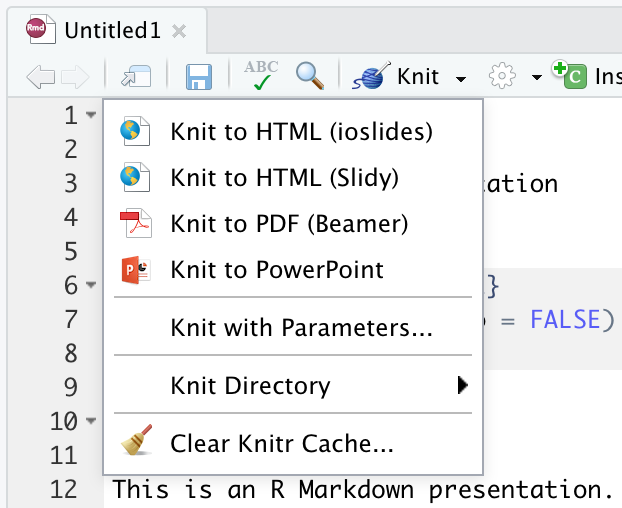

2018-11-19
Today, we’re continuing our blog series on new features in RStudio 1.2. If you’d like to try these features out for yourself, you can download a preview release of RStudio 1.2.
In this blog series thus far, we’ve focused on the biggest new features in RStudio 1.2. Today, we’ll take a look at some of the smaller ones.
Many R scripts open with calls to library() and require() to load the packages they need in order to execute. If you open an R script that references packages that you don’t have installed, RStudio will now offer to install all the needed packages in a single click. No more typing install.packages() repeatedly until the errors go away!
If this isn’t helpful in your workflow, disable it in Options -> Code -> Diagnostics -> [x] Prompt to install missing R packages.
R Markdown is a great tool for making presentations – in addition to being convenient (no more copying and pasting results and graphs!), your whole presentation becomes a reproducible document. Now you can author PowerPoint presentations in R Markdown, thanks to the new PowerPoint presentation support in Pandoc 2.
To make a new PowerPoint presentation, go to File -> New File -> R Markdown -> Presentation -> PowerPoint. You can also make a PowerPoint presentation out of one of your existing presentations by opening the Knit menu…

… or just by including output: powerpoint_presentation in your presentation’s YAML header.
When working with PowerPoint, using the Knit command will cause your slideshow to re-open in PowerPoint right where you left off, so it’s easy to iterate on changes.
Se our guide to rendering PowerPoint presentations with RStudio for more details, including how to use columns, templates, and speaker notes.
The data viewer in RStudio 1.1 lets you filter numeric columns by dragging a pair of endpoints to select the range of interest.

Many of you let us know that you wanted to be able to enter the exact values you wanted to filter by, or type just one value. We’ve implemented this, and we’ve also added a histogram to make it easy to see the distribution of the data in the column at a glance.
Just brush (drag over) the section of the histogram you’re interested in to apply a filter. You can also type your own range into the textbox, or even a single value if that’s what you’re interested in.
RStudio’s Files pane has traditionally not shown hidden files, with the exception of a handful that it knows to be useful (for example, your .Rprofile). Sometimes, however, you really want to be able to see everything – and now you can. Click More on the Files pane, then check Show Hidden Files.
You might have noticed that sometimes – especially while debugging – values in the Environment pane look disabled and show an expression rather than a value. For example, try typing data("AirPassengers"). You’ll see this in your Environment pane:

These values are called “promises” and represent function arguments or other unevaluated expressions (read more about promises in the non-standard evaluation chapter of Advanced R). (Why doesn’t RStudio show the value right away? The Environment pane tries hard to avoid causing side effects, so it doesn’t evaluate unevaluated expressions.)
If you do want to see the value right away, you can now just click it in the Environment pane. RStudio will call force() on the promise for you, and you can see its value immediately.
Sometimes the data in a data frame isn’t simple; if the data frame was derived from nested data (such as JSON) some of its values may themselves be lists (read the purrr tutorial on list columns for more). In RStudio 1.2, the data viewer makes these columns easy to explore by rendering the list values:
Click on any list value to open it in the Object Explorer.
If you connect to a database with a lot of tables, it can be tedious to scroll to the one you want. You can now type part of the table’s name in the new Search box instead:

Note that, for performance reasons, this search field doesn’t search all the object names in your database; it only filters the ones that are already visible.
One of the things that makes knitr powerful is its support for custom engines. In RStudio 1.2, we’ve made R Notebooks more extensible by integrating support for these custom engines. Here’s an example of an R Markdown document with a custom engine called data, which evaluates a chunk’s contents as raw data (in the style of a bash heredoc for data):
---
title: Hello Text Data
---
Register the `data` engine.
```{r}
knitr::knit_engines$set(data = function(options) {
assign(options$output.var,
read.table(text = options$code),
envir = knitr::knit_global()
)
NULL
})
```
Use the `data` engine to evaluate this chunk, and save results to `x`.
```{data, output.var='x'}
26 A L
30 A L
18 A M
20 B H
```
Print the resultant value.
```{r}
x
``` In RStudio 1.2, you can run all of this code in an R Notebook. The results appear right beneath the chnk:
We’ve revamped the Packages section of Options. Now you can manage primary and secondary repositories from inside RStudio.

(Hint: this feature works great with the new RStudio Package Manager.)
You might also have noticed that we’ve added web links to every package in the Packages pane. These will take you the package’s homepage – even if it’s on Github rather than CRAN.
Have you ever wanted to customize the behavior of the Source command in RStudio? Maybe you have an R script that needs some pre- or post- actions before source(), or you’re working with a file for which source() doesn’t make sense at all – for instance, when using alternate R parsers.
Now you can make RStudio’s Source command do whatever you like, using a magic comment like the following:
# !source altparsers::srcThis tells RStudio to use altparsers::src() instead of source() when you invoke the Source command. You can customize the behavior even more by using .file or .code in the magic command to refer to the filename and its contents, respectively.
We’re always looking for little ways to make RStudio a more comfortable environment for your day-to-day work with R, and we hope these small changes add up for you. We very much appreciate your feedback and ideas – many of the above were suggestions from the community. Download the RStudio 1.2 Preview to try these features out, and visit the community forum to let us know what you think!